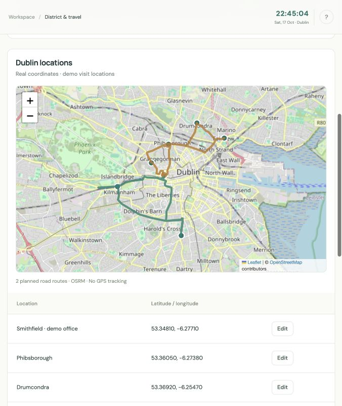
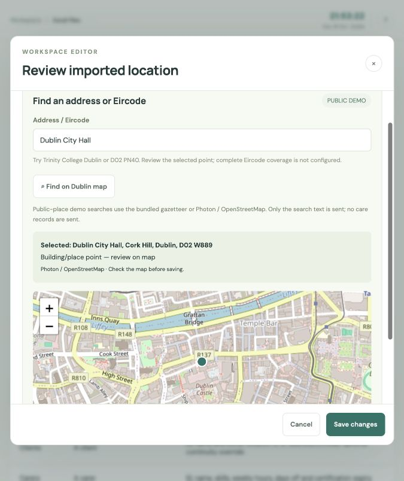

Qualified care, on time
Match skills, certification dates, availability, travel and visit duration. Keep breaks, working-hour limits and completed visits intact.
Qualified carers, familiar faces and practical routes. A weekly planner that treats every visit window and continuity limit as a hard rule.
This GitHub Pages site is the project showcase. The interactive planner runs on a Python host. The deploy button opens Render setup and requires your account; a hosted instance has not been provisioned by this page.

Match skills, certification dates, availability, travel and visit duration. Keep breaks, working-hour limits and completed visits intact.
Limit each client to three or four distinct carers across the whole week, including completed visits when repairing a disrupted roster.
Inspect planned routes on OpenStreetMap, use estimated road travel times and follow a live Europe/Dublin clock. No live traffic or GPS tracking.
Import carers, clients, availability, visits and locations. Resolve public demo addresses, review errors and export a verified roster.
Download the example workbook ↓
The ten-hour baseline completed 11,283 synthetic cases. A separate one-hour v3 run completed 969 cases: 633 verified rosters, 334 infeasibility proofs and two inconclusive searches, with no recorded correctness or runtime failures.
These are synthetic tests, not a production safety guarantee. Large cases can still exhaust their search allowance. Read the full v3 run report ↗
onrender.com address.Free services can sleep when idle and have limited CPU. Small examples are the best starting point. Use fictional data only; there are no accounts, access controls or production care-record storage in this demo.
Full hosting instructions and Docker commands ↗